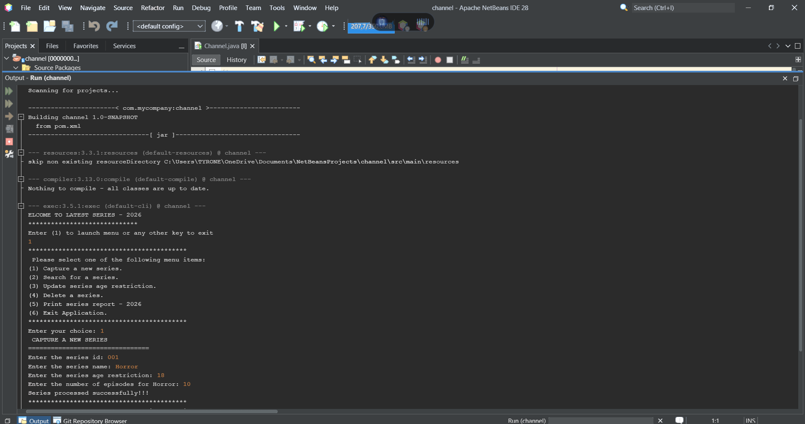
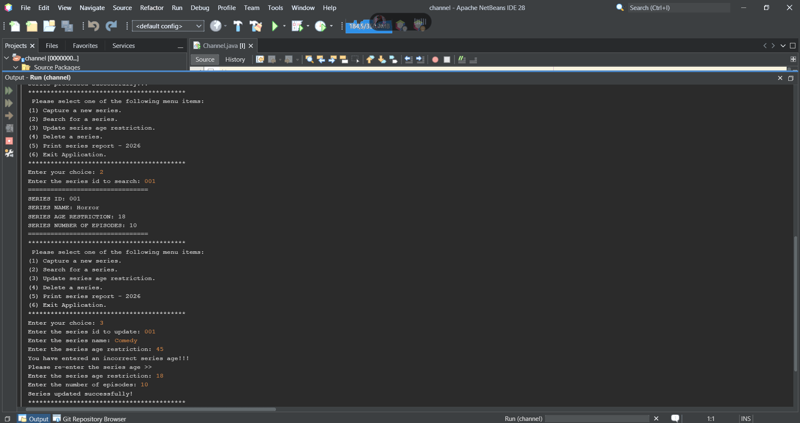
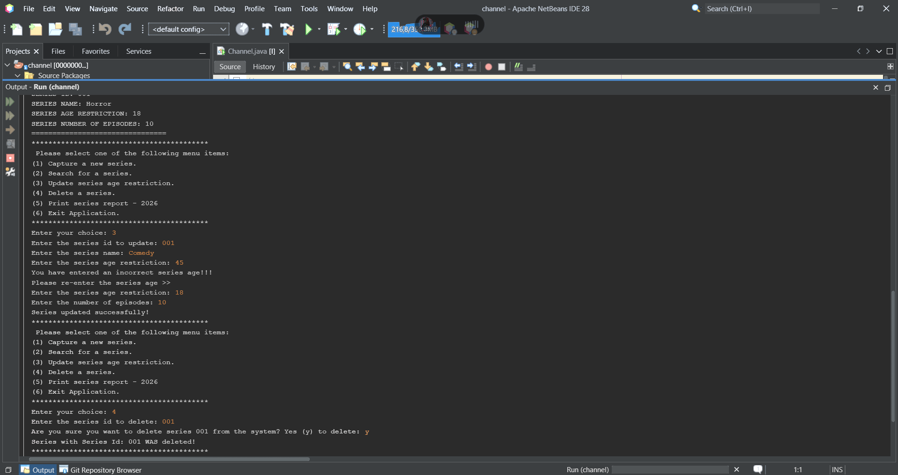
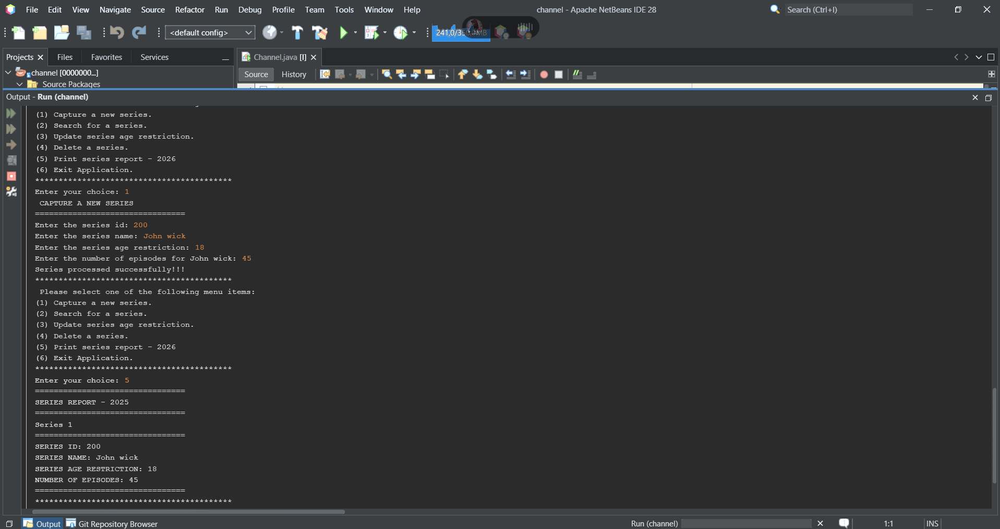
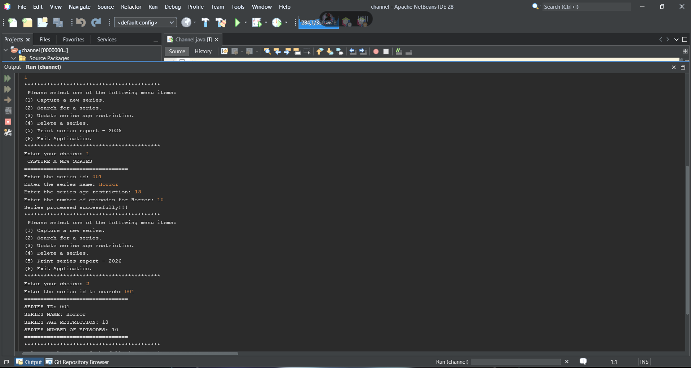

Capture Series
Add new series records with an ID, name, age restriction and episode count.
JAVA DEVELOPMENT PROJECT
A menu-driven Java console application designed to help users capture, search, update, delete and generate reports of television series records.
01 — OVERVIEW
The TV Channel Series Management System is a Java-based application that allows users to manage television series information through a simple menu. It demonstrates fundamental programming concepts, object-oriented design and basic record management operations.
02 — FEATURES
Add new series records with an ID, name, age restriction and episode count.
Find a series using its unique series ID.
Modify existing series information.
Remove a series after confirmation.
Validate age restrictions using an accepted range of 2 to 18.
Display the series records captured during the application session.
03 — TECHNOLOGY
05 — APPLICATION SCREENSHOTS
Explore the main screens and record-management features of the Java application.

The application's entry screen.

Capture new television series records.

Modify existing series information.

Remove a series after confirmation.

Display captured series records.

Find a series using its ID.